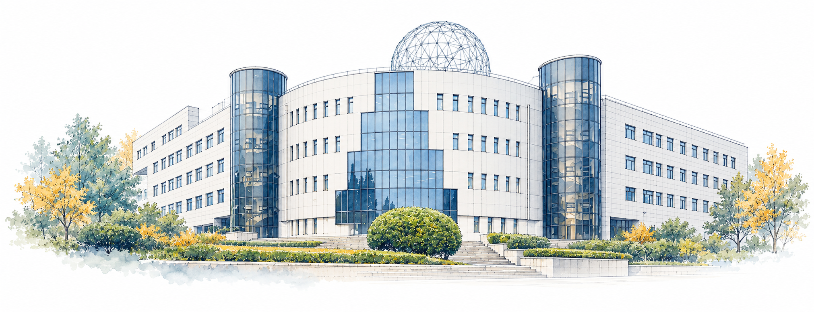

认识 GSFP
团队与研究
理解流动，感知状态，让分离更高效。

团队简介
01 / 多相流动与分离GSFP（Gas-Solid Flow Perception，气固流动与感知）是中国石油大学（北京）重质油国家重点实验室的研究团队，依托学校多相流分离技术的长期积累，专注但不局限于石油炼化、煤炭化工等领域的多相流动与分离。团队以工业过程中的实际问题为牵引，研究气固、气液和液固体系中的流动与分离规律，致力于分离过程的高效、低耗与稳定运行。
团队先后在国家自然科学基金、国家重点研发计划以及“973”“863”等科研项目支持下，开展流动机理、分离技术与工程装备研究。相关工作涉及高温、高浓度及复杂工况下的颗粒输运与分离、多相流动与反应耦合、分离装备优化设计，以及废弃泥浆和钻井污水的分离处理与再利用。以 PV 型旋风分离器家族技术为代表，团队积累了尺寸分类优化、基于相似准数的性能预测、多参数优化组合等设计方法，注重根据具体物性和操作条件开展装备设计。相关研究与技术应用涉及催化裂化、丙烯腈、氧氯化、乙烯清焦、煤气化和天然气净化等过程，形成了实验验证、工程设计与工业应用相互促进的研究基础。
团队将理论分析、流场与颗粒测试、冷模及高温实验和计算流体力学模拟相结合，关注分离效率、压降能耗与操作弹性之间的关系。面向颗粒损失、沉积、结焦等影响装备长周期运行的问题，进一步探索基于颗粒谱和运行数据的监测诊断与状态感知方法，为过程装备的性能评价、优化与可靠运行提供支持。